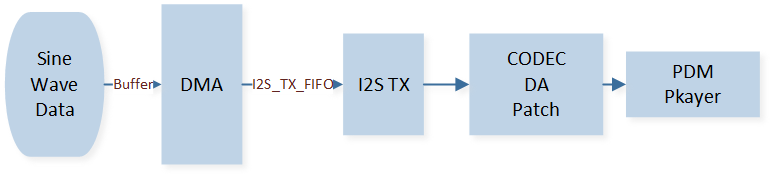

Playback
This example demonstrates how to encode a 1KHz sine wave signal via CODEC and output audio.
It uses GDMA to transfer I2S data from memory to the I2S transmit FIFO, then encodes it into PDM signals using CODEC.
External PDM players can play fixed-frequency sine wave audio.
Requirements
For requirements, please refer to the Requirements.
In addition, you need to install PuTTY or UartAssist serial assistant tools and audio parsing tools like Audacity on the PC terminal.
Wiring
Connect the external PDM player to the EVB, connecting P4_3 to CLK and P4_2 to DATA.
Building and Downloading
For building and downloading, please refer to the Building and Downloading.
Experimental Verification
Listen to the 1KHz sine wave sound through the PDM player.
Code Overview
This section introduces the code and process description for initialization and corresponding function implementation in the sample.
Source Code Directory
The directory for project file and source code are as follows:
Project directory:
sdk\samples\peripheral\codec\playback\projSource code directory:
sdk\samples\peripheral\codec\playback\src
Initialization
The initialization flow for peripherals can refer to Initialization Flow in General Introduction.
The initialization process includes initializing the codec, uart, i2s, and gdma modules as follows.
Call
Pad_Config()andPinmux_Config()to configure the PAD and PINMUX for PDM-related pins.void board_codec_init(void) { Pad_Config(PDM_CLK_PIN, PAD_PINMUX_MODE, PAD_IS_PWRON, PAD_PULL_NONE, PAD_OUT_ENABLE, PAD_OUT_LOW); Pad_Config(PDM_DAT_PIN, PAD_PINMUX_MODE, PAD_IS_PWRON, PAD_PULL_NONE, PAD_OUT_ENABLE, PAD_OUT_LOW); Pinmux_Config(PDM_CLK_PIN, PDM_CLK); Pinmux_Config(PDM_DAT_PIN, PDM_DATA); }
Call
Pad_Config()andPinmux_Config()to configure the PAD and PINMUX for I2S-related pins.void board_i2s_init(void) { Pad_Config(CODEC_BCLK_PIN, PAD_PINMUX_MODE, PAD_IS_PWRON, PAD_PULL_NONE, PAD_OUT_ENABLE, PAD_OUT_LOW); Pad_Config(CODEC_LRCLK_PIN, PAD_PINMUX_MODE, PAD_IS_PWRON, PAD_PULL_NONE, PAD_OUT_ENABLE,PAD_OUT_LOW); Pad_Config(CODEC_TX_PIN, PAD_PINMUX_MODE, PAD_IS_PWRON, PAD_PULL_NONE, PAD_OUT_ENABLE, PAD_OUT_LOW); Pad_Config(CODEC_RX_PIN, PAD_PINMUX_MODE, PAD_IS_PWRON, PAD_PULL_NONE, PAD_OUT_ENABLE, PAD_OUT_LOW); Pinmux_Config(CODEC_BCLK_PIN, BCLK_SPORT0); Pinmux_Config(CODEC_LRCLK_PIN, LRC_SPORT0); Pinmux_Config(CODEC_TX_PIN, DACDAT_SPORT0); }
Execute
I2S_StructInit()andI2S_Init()to initialize the I2S peripheral. Configuration parameters for the I2S0 initialization are as follows:
I2S Hardware Parameters |
Setting in the |
I2S master RX |
|---|---|---|
Sample Rate (Mi) |
0x271 |
|
Sample Rate (Ni) |
0x10 |
|
Device Mode |
||
Channel Type |
||
Data Format |
||
Data Width |
Execute
GDMA_StructInit()andGDMA_Init()to initialize the GDMA peripheral. Configuration parameters for the GDMA initialization are as follows:
GDMA Hardware Parameters |
Setting in the |
GDMA Channel |
|---|---|---|
Channel Num |
0 |
|
Transfer Direction |
||
Source Address Increment or Decrement |
||
Destination Address Increment or Decrement |
||
Source Data Size |
||
Destination Data Size |
||
Source Burst Transaction Length |
||
Destination Burst Transaction Length |
||
Source Address |
|
|
Destination Address |
|
|
Destination Handshake |
Configure the GDMA transfer complete interrupt
GDMA_INT_Transferand NVIC. Related NVIC configuration can be referred to in Interrupt Configuration.Initialize the CODEC peripheral.
Call
CODEC_AnalogCircuitInit()to initialize the analog circuit.Call
RCC_PeriphClockCmd()to enable the CODEC clock.Execute
CODEC_StructInit()andCODEC_Init()to initialize the CODEC peripheral. Configuration parameters for the CODEC initialization are as follows:
CODEC Hardware Parameters |
Setting in the |
CODEC |
|---|---|---|
Da Mute |
||
Da Gain Mode |
0xAF |
|
DaC Dither |
||
I2S Data Format |
||
I2S Channel Len |
||
I2S Data Width |
||
I2S Channel Sequence |
Execute
preload_cos_tableto prepare the sine wave data to be sent.Call
I2S_Cmd()to enable the I2S receive mode. CallGDMA_Cmd()to enable GDMA transfer.
Functional Implementation
The sine wave data is transferred by GDMA from memory to the I2S TX FIFO. After being converted by DA (Digital-to-Analog) module in CODEC, the audio can be heard through an external PDM amplifier. The data transmission order across each module is illustrated in the diagram below.
{kind=link}

Data Transfer Module
When the GDMA transfer amount reaches the set BlockSize, it triggers the
GDMA_INT_Transferinterrupt. In the interrupt handler, the source address, destination address, and BlockSize are reset, and GDMA transfer is re-enabled to ensure continuous data transmission.GDMA_SetSourceAddress(CODEC_GDMA_Channel, (uint32_t)codec_drv_cos_table); GDMA_SetDestinationAddress(CODEC_GDMA_Channel, (uint32_t)(&(I2S0->I2S_TX_FIFO_WR_ADDR))); GDMA_SetBufferSize(CODEC_GDMA_Channel, CODEC_DRV_COS_TABLE_SAMPLE); GDMA_ClearINTPendingBit(CODEC_GDMA_Channel_NUM, GDMA_INT_Transfer); GDMA_Cmd(CODEC_GDMA_Channel_NUM, ENABLE);
See Also
Please refer to the relevant API Reference: